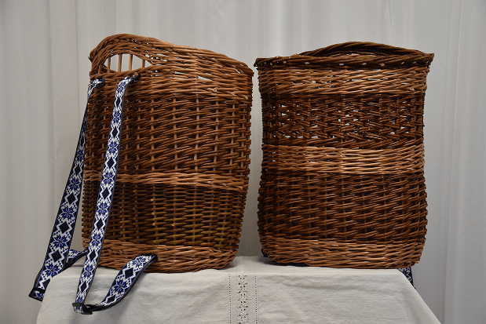
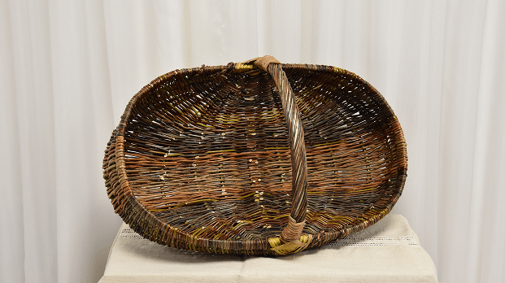
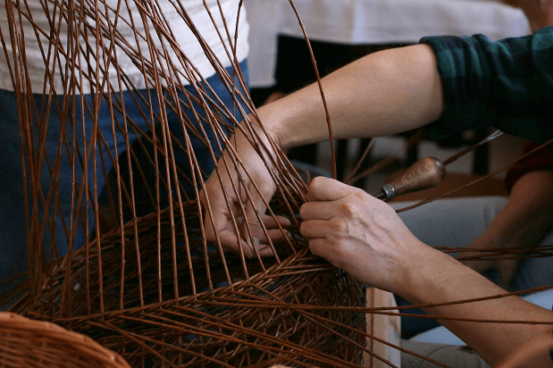
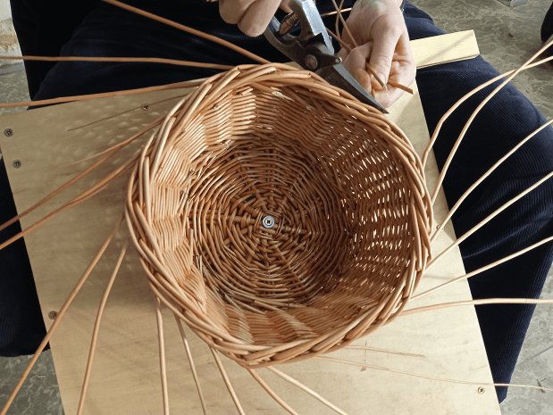
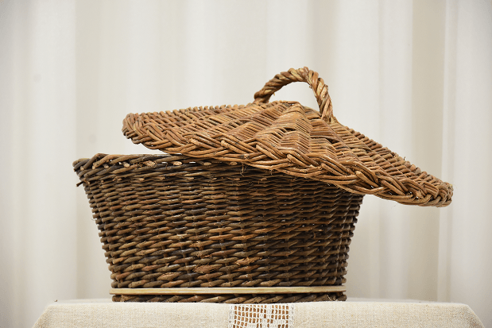
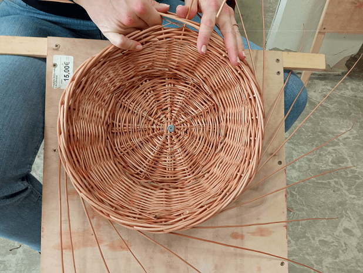
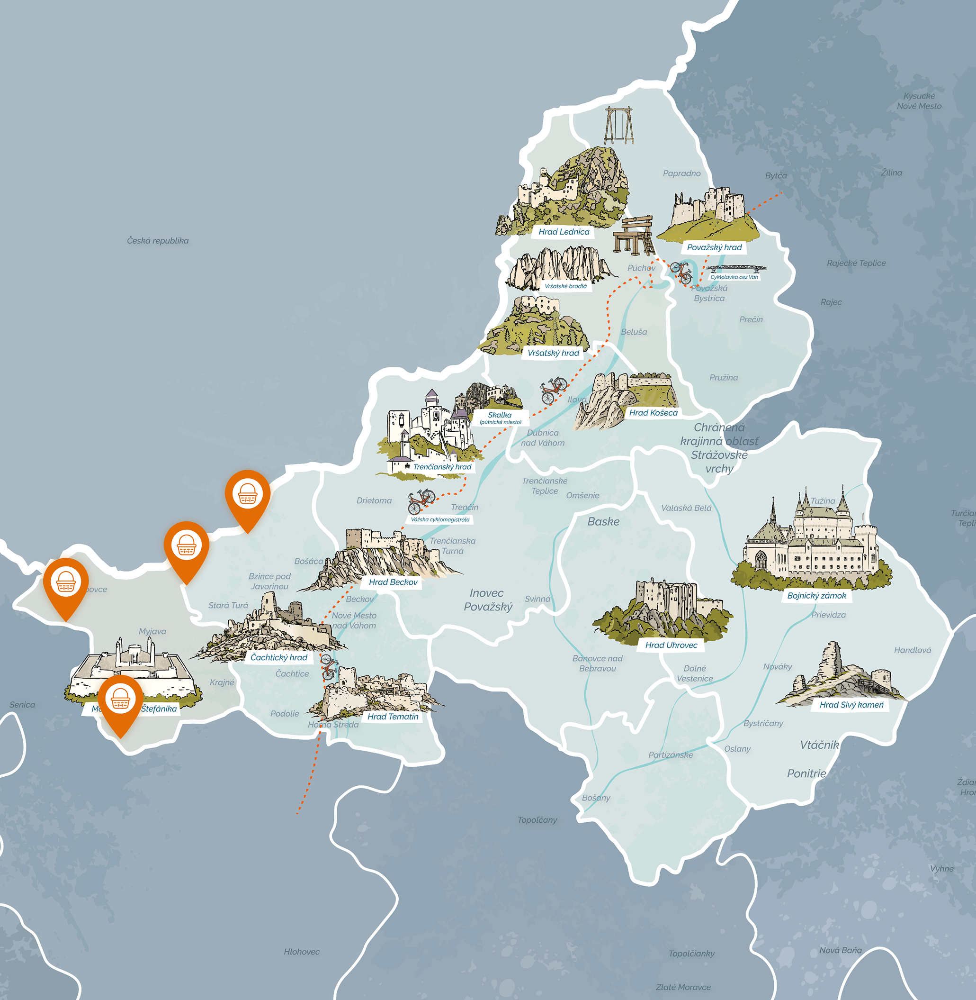

“Prútie, trpezlivosť a pevný rytmus rúk – košík vzniká ako spojenie prírody a remesla.”
Pletenie košíkov a ďalších úžitkových predmetov z prírodného prútia patrí medzi tradičné remeslá vidieckych oblastí Trenčianskeho kraja.



Najrozšírenejším materiálom, ktorý košikári využívajú na pletenie košov a iných predmetov je vŕbové prútie rastúce pri brehoch riek a rybníkov alebo pestované v prútnikoch. Z prútia sa plietli koše rôznych tvarov a využití. Koše na prenášanie, uskladňovanie úrody a produktov, koše na chytanie rýb alebo pre liahnutie hydiny. Ďalšími výrobkami z prútia sú tašky, korbáče, kočíky a kolísky, sušiarne na ovocie, nábytok. Vŕbové prútie sa využívalo aj v stavebníctve na vypletanie stien, plotov, brán.




Prútie sa pred pletením namáča, aby bolo pružné a nelámalo sa. Prútené výrobky sú zároveň úplne prírodné a biologicky rozložiteľné. Patrónom košikárov je sv. Anton Pustovník. V Beluši vznikla v roku 1893 prvá košikárska škola na území Slovenska. (zdroj: Košikárstvo – premeny vŕbového prútia, Juriga Peter a kol. , ÚĽUV, 2007)
hra